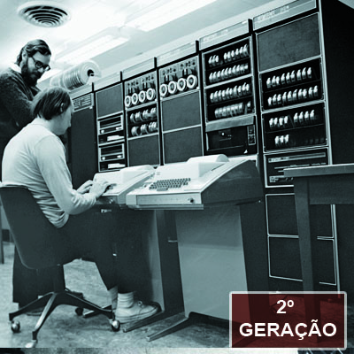
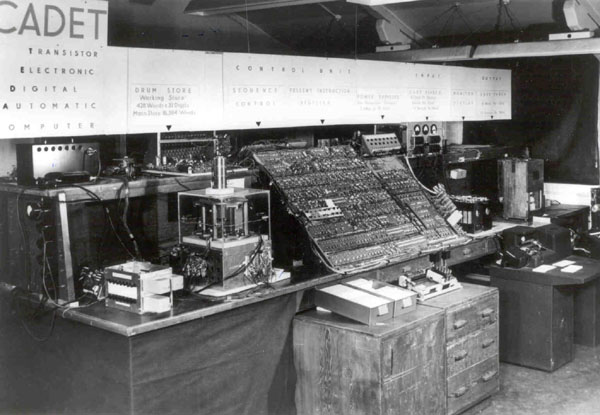

Ainda com dimensões muito grandes, os computadores da segunda geração funcionavam por meio de transistores, os quais substituíram as válvulas que eram maiores e mais lentas. Nesse período começou a se espalhar o uso comercial. Nos equipamentos de segunda geração, a válvula foi substituída pelo transístor dispositivo electrônico desenvolvido em 1947 na Bell Laboratories por Bardeen, Brettain e Shockle. Seu tamanho era 100 vezes menor que o da válvula, não precisava de tempo para aquecimento, consumia menos energia, era mais rápido e mais confiável. Os computadores desta época calculavam em microssegundos.

Com apenas 1/200 do tamanho de uma das primeiras válvulas e consumindo menos de 1/100 da energia, o transístor passou a ser generalizado em todos os computadores por volta dos Anos 60. A função básica do transístor em um computador é o de um interruptor eletrônico para executar operações lógicas. É frequentemente mencionado que primeiro computador 100% transistorizado foi o TRADIC (TRAnsistor DIgital Computer ou TRansistorized Airborne DIgital Computer), da Bell Laboratories. Isso entretanto não é de todo verdade.
É verdadeiro que o computador TRADIC Phase One, ou apenas TRADIC, foi completado à frente do Mailüfterl (construído na Áustria) ou do Harwell CADET (construído no Reino Unido), todos no ano de 1955. No Reino Unido um protótipo chamado Manchester University Transistor Computer foi demonstrado em 1953 e incorporava transistores antes do TRADIC se tornar operacional, mas não era totalmente transistorizado – usava tubos à vácuo para gerar o sinal do clock. O TRADIC também usava o mesmo sistema, com tubos à vácuo suprindo os 30 watts para seu clock de 1 Mhz. Sendo assim, se o TRADIC pode ser chamado de completamente transistorizado mesmo possuindo tubos de vácuo, então o Manchester University Transistor Computer também pode ser e deverá então ser considerado o primeiro. Caso nenhum dos dois possa receber o título, então o primeiro computador completamente transistorizado é o CADET, operacional em fevereiro de 1955. Outro modelo dessa época era o IBM 1401, com uma capacidade de memória base de 4.096 bytes.
